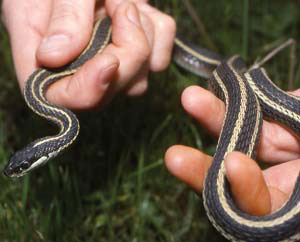
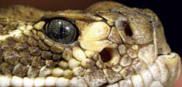
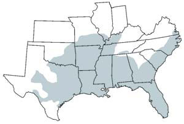
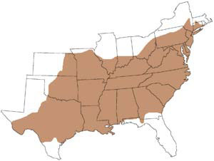
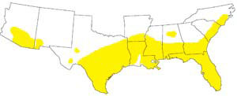
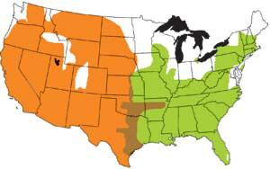

If you are afraid of snakes, we hope you will still read this article, which stresses that most North American snakes aren’t dangerous, and that snakes are interesting and even beautiful wild creatures. - Mother
When I began wildlife consulting at the Austin, Texas, Natural Science Center, I quickly learned how intensely some people react to snakes. The vast majority of North American snakes pose no threat to humans (those that do are coral snakes and the pit vipers: rattlesnakes, copperheads and cottonmouths). But for those who called the Center, no other issue carried the same urgency as a snake in their vicinity.
One of my first such emergencies entailed a supposed tree-climbing cobra. When I arrived in the suburban subdivision, four firefighters - summoned by the same anxious homeowners who’d called me - were being raised into a large oak tree. After half an hour of treetop acrobatics - the snake darted from branch to branch just beyond their clutching fists - the firefighters gave up trying to grab what I could see was a long, slim Texas rat snake. After I declared that the snake was, for certain, not a cobra, the neighborhood settled down.
A majority of my snake-related calls came from people who had recently moved to the country. I felt a special connection with these rural residents because I was about to homestead a few acres myself. There, I would embark upon writing field guides to North American snakes.
Out at my new place on the edge of east Texas’ woods, I found a lot of subject matter for my books. My first visitor was a slow-moving, thick-bodied eastern hog-nosed snake. These innocuous creatures often show up around country houses where their primary prey, toads, are attracted by the insects they find in gardens or yards.
In some of its color variations, the hog-nosed snake resembles the venomous copperhead, but the latter has a narrow neck and wide head, bordered with indented cheeks that have heat-sensing cavities. In contrast, the hog-nosed snake has a thick neck, no facial pits and a snout with a sharply upturned hook. Even more distinctive are its small eyes and round pupils, which you can see from several feet away. They are entirely unlike copperheads’ larger eyes and vertical pupils. All of North America’s venomous serpents have vertical pupils, except for the coral snake (see photos).
The rat snake is another that’s often mistaken for something venomous. Sometimes called the “chicken snake,” rat snakes vary in color from black to dark-mottled gray (in the Northeast), to yellow with dark stripes (in the Southeast) to chocolate-patterned rusty brown (in Texas). Like the hog-nosed snake, rat snakes often are mistaken for venomous varieties because of their large size and blotchy patterns.
Natural hunters of rodents, rat snakes often come into contact with small carnivores such as foxes, raccoons and opossums, against whom rat snakes have developed the defensive tactic of making sudden, mostly bluffing strikes that display the white lining of their mouths. That works well against other animals, but with humans that approach can imply enough of a threat to get the snake killed.
Rat snakes will eat all kinds of birds, so if poultry or nesting songbirds are priorities around your homestead, consider relocating any rat snakes that appear. If the snake is on the ground, lay a square-sided garbage can on its side, and use a long, stiff broom to sweep it into the opening. Then quickly stand the garbage can upright and clamp down the lid. (This strategy will work for almost any snake, including venomous species.)
Other harmless snakes commonly found around rural homes are easy to identify. Racers, for example, are common, gray-green, ground-living serpents, but they are so fast that it can be tough to get a close look at them. After streaking away, though, a racer will sometimes raise its head and peer back to see if you are coming after it. Garter snakes and ribbon snakes are even easier to identify. They have light-colored, narrow stripes that run the length of their bodies. Predators of worms, fish and frogs, garter and ribbon snakes can be fun to watch going about their hunting; a stationary observer is unlikely to attract their attention.
Myriad frightening myths exist about water snakes, and most of them stem from confusion with the venomous cottonmouth, also known as the water moccasin. Cottonmouths can be found around water throughout the Southeast and lower Midwest, and everywhere they live they bear a ferocious - though somewhat undeserved - reputation. Compared to rattlesnakes, for example, most cottonmouths have lethargic temperaments, and their venom is much less toxic. But cottonmouths’ coloring (muddy black to dark green), their large adult size and their startling encounters with fishermen and boaters give them a menacing reputation that is only intensified by the dramatic nature of their defensive display.
Most of the time, cottonmouths will withdraw from humans, but if a getaway seems impossible, an adult cottonmouth may hold its ground and gape upward in a wide-jawed posture that shows off its fangs and the bright-white lining of its mouth. Most often this threat is a bluff; even from such an intimidating stance cottonmouths often don’t strike. I’ve gently prodded many of them with the toe of a boot, seldom drawing anything other than a more widely opened mouth.
True water snakes never gape. They also lack the dark, heat-sensing facial cavities and vertically slit, catlike pupils of cottonmouths. When swimming, water snakes float with only their heads protruding and keep most of their bodies well below the surface. The cottonmouth typically floats with its entire body buoyed like an inflatable pool toy.
Like garter snakes, water snakes can be interesting to watch. A few yards from my little country house there was a deep pond. Sitting quietly on the bank, I once observed a water snake drag a catfish too large to overpower in the water out onto the shore to suffocate. At that perfect swimming spot I never saw a cottonmouth (which would also be the case around most farm ponds and fishing holes). But my neighbors were convinced both their pond and mine teemed with water moccasins. What they actually saw were water snakes that would periodically arrive after a nighttime trek from a river a half-mile away. This happened only when our ponds’ fish or frog population boomed, and is a normal ecological adjustment that occurs in the small bodies of water found near many rural homesteads.
My neighbors’ mistaken identification, though, is understandable because water snakes resemble cottonmouths in their girth and color. Also, in late summer, water snakes congregate in drying ponds and small streams to prey on stranded fish and frogs. Many chilling stories come from such aggregations being mistaken for a nest of cottonmouths. But cottonmouths never actually “nest” together.
The idea that snakes nest together is among the most common misconceptions about them. I’m always being told about someone digging up a nest of baby snakes. With a few exceptions - such as the eastern diamond-backed rattler - baby serpents go their separate ways as soon as they emerge, never to see their siblings again. What people do find - beneath rocks, or in compost or freshly turned planting soil - are loose assemblies of certain small species of snakes.
From the edges of this country’s eastern forests to the Great Plains, the Rockies, the southwestern deserts and the Pacific coast, very different complements of snakes occur. Large, yellow-brown, dark-blotched species such as bull and gopher snakes commonly appear around quiet, open country houses. Because they hunt mice, rats and ground squirrels, these docile serpents are an ally in man’s ongoing competition with rodents. Contrary to eco-political correctness, though, snakes seldom exert the major controlling influence you may have heard about, given their slow metabolism and subsequently limited need for food. For the most part, snakes are neither much of a threat to humans, nor a powerful ally. It’s just that there happen to be a few venomous varieties among them.
Before I finished my country house, almost every morning when I threw back the tarp covering my building materials there would be a plump, mahogany-and-ochre copperhead staring up at me. These pit vipers, I discovered, are remarkably even-tempered; not one of my reclusive mouse-hunters ever struck, or even tried to crawl away. But because their new shelter was also my work area, I dutifully swept each morning’s visitor into a square-sided plastic trash can, then released the snake in a woodland a mile away.
Soon, though, another copperhead would show up and we’d go through the same routine. I knew that copperheads - besides being innately calm - also are sedentary and typically spend their entire lives within less than an eighth of a square mile, so none of my relocated captives were crawling back. But what I didn’t know until I started writing about snakes was that copperheads can be so numerous in biologically rich woodlands that every one of my uninvited guests - almost a dozen before their numbers began to thin - was a local resident of the surrounding five or six forested acres.
Rural residents anywhere southeast of the Great Plains might encounter a similar situation, but it’s no real cause for alarm. Unless stepped on or bumped, copperheads are reluctant to strike humans, and even when they do their venom is far less potent than that of rattlesnakes. In researching my books I found not a single death - regardless of treatment, or the lack thereof - among several hundred recorded copperhead bites. Nevertheless, I never left a copperhead coiled in hiding next to my stacked 2-by-4s.
Also present in the woods near my house were venomous coral snakes, which have red, black and yellow color bands. Unless you live in Florida, the Deep South, the eastern two-thirds of Texas or southern Arizona or New Mexico, any brightly banded little snake probably is a harmless milk snake, not a coral. Either way, leave it alone, because coral snakes can snap sideways with surprising speed and can open their jaws nearly 180 degrees to form an almost flat surface. With that kind of speed and spread, it’s easy for the coral snake to pinch out a fold of skin to bite. I once had a coral snake clamp onto the heavy leather of a welding glove with such power that it instantly forced out venom.
Only a minor penetration of the skin by the coral snake’s tiny fangs can deliver a dangerous dose of potent neurotoxins, which have evolved in these small relatives of cobras because their primary prey are other snakes that can be as large as or even larger than they are. The best option, whether it’s actually a milk or coral snake, is to simply admire the animal’s brightly hued, porcelainlike scales from a distance.
If this sort of close encounter causes you more worry than pleasure, you can take simple steps to minimize snakes from finding the area around your home attractive. First and foremost, meticulously eliminate food sources and hiding places for snakes’ small rodent prey. People often ask about chemical deterrents, but pesticides have a far greater negative effect on people and domestic animals than they do on wandering serpents. Instead, the next step up in snake deterrence is to enlist a couple of aggressively tempered outdoor cats or an alert dog, such as a terrier. Feisty cats or dogs will harass snakes until they clear out, and unless they are bitten on the chest, both dogs and cats can overcome snake venom with treatment from a veterinarian. Another option is to keep pot-bellied or domestic pigs - animals that are largely inured to the effects of reptile venom by their thick hides and subcutaneous fat, and that will happily devour any small snake whose musky scent attracts their keen noses.
Rattlesnakes are the most dangerous serpents in North America. Descendants of copperheadlike pit vipers, the rattlesnake developed a tail tip with loosely connected columns of swollen, thin-walled scales that - when vibrated - make a high frequency buzz that warns away potential predators and grazing animals that might trample them.
Living mostly in open country and often consuming prey larger than itself - such as rabbits and prairie dogs - the rattlesnake evolved venom that’s much more toxic than that of its ancestors, and long hypodermic fangs to deliver it. Whereas eastern copperheads easily adapt to life in the presence of humans, rattlesnakes have a much more aggressive temperament, although they generally clear out once a rural homestead takes on the hustle and bustle of active habitation. But in places where rattlesnakes are abundant, a chance encounter is almost inevitable. Therefore, important precautions include heavy boots, a habitually watchful demeanor and caution when reaching down to pick up trash, lumber or metal siding. While almost nobody dies of rattlesnake bites these days, these steps are important, because even when properly treated a venom-injecting bite will cause severe pain, usually for days, and considerable tissue necrosis.
Although emphasized in every outdoor survival manual and training course, first aid in the field is - beyond a few basic measures - of minimal significance. All pit viper venom disperses so rapidly into the body - like ink dripped onto a wet sponge - that even in the first seconds after a bite there is no good way to get it back out. Cutting and sucking the fang punctures doesn’t work and often leads to both excessive bleeding and infection. The application of cold has little effect, except an ice pack placed on the victim’s forehead will combat nausea. The most practical first aid is merely to immobilize the bitten limb and remove rings, shoes and anything else that might act as a tourniquet when the inevitable swelling begins. Most important of all is to get the victim to a hospital, pronto.
Treatment for venomous snakebites has vastly improved in recent years because of a new antivenin, Savage Laboratories’ CroFab. It works in part by coating the venom, like Christmas tree flocking, and preventing it from bonding to, then dissolving, the body’s proteins. But CroFab is expensive, and treatments for severe rattlesnake bites can cost thousands of dollars. That’s yet another good reason to be vigilant in rattlesnake country.
The outdoors is full of dangers, however, and snakebites are surely among the least of them. There are less than a handful of fatalities from snakebites each year. Most snakes are harmless, and for people able to accommodate themselves to the pleasures of life in the country, the occasional appearance of one of these fascinating creatures may even come to be regarded as a treat. When viewed in the wild and on their own undisturbed terms - rather than as culturally charged symbols of good or evil - we can enjoy snakes as fascinating participants in the elegant tapestry of our living world.
- Alan Tennant is a herpetologist, wilderness guide and an award-winning author of five field guides to snakes.
|
 TODD FINK/DAYBREAK IMAGERY Eastern ribbon snake |
 DWIGHT KUHN Western rattlesnake |
 MATTHEW T. STALLBAUMER Cottonmouths can be found around water through the Southeast and lower Midwest. |
|
 MATTHEW T. STALLBAUMER Copperhead snakes can be numerous in biologically rich woodlands anywhere southeast of the Great Plains. |
 MATTHEW T. STALLBAUMER Unless you live in Florida, the Deep South, the eastern two-thirds of Texas or southern Arizona or New Mexico, any brightly banded little snake probably is a harmless milk snake, not a coral. |
 MATTHEW T. STALLBAUMER The most dangerous serpent in North America, rattlesnakes are divided into two types, Western rattlesnakes and Eastern rattlesnakes. |